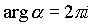
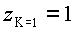
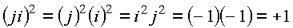

|
В. И. ЕЛИСЕЕВ ВВЕДЕНИЕ В МЕТОДЫ ТЕОРИИ
ФУНКЦИЙ ПРОСТРАНСТВЕННОГО КОМПЛЕКСНОГО ПЕРЕМЕННОГО |
|
ГЛАВА 1. ОСНОВНЫЕ ПОНЯТИЯ
Введены основные понятия теории функций пространственного комплексного переменного (ТФПКП): понятие функции, ее производной, интеграла. Показано, что обычные определения классического анализа и теории функций комплексного переменного (ТФКП) переносятся почти без изменения в ТФПКП, но содержание, особенно в критических точках пространства, меняется существенным образом.
Выведены пространственные условия дифференцируемости функции – аналог условий Коши – Римана. Исследована связность пространства и дана теорема – аналог теоремы Коши, как в случае криволинейного интеграла, так и в случае поверхностного.
Особое внимание уделено четырехмерному пространству, содержащему множество, образованное делителями нуля, которое в цилиндрических координатах образует конус-фильтр, состоящий из дискретных точек, а в сферических координатах этот конус сворачивается в цилиндрическую ось с изолированным направлением.
Классические функции анализа приобретают на этом конусе новые свойства, дополняющие понятия этих функций, определенных в плоскости комплексного переменного.
Показана принципиальная возможность создавать объемные конформные отображения и в качестве примеров рассмотрены конформные отображения, которые получаются с помощью дробно-линейной функции, функции Жуковского и их комбинаций.
Дана теория рядов Тейлора и Лорана, построена теория вычетов, получена лемма - аналог леммы Жордана в пространстве и дано применение этой леммы к вычислению не поддававшихся ранее вычислению несобственных двойных интегралов.
1.1. Пространственная комплексная система чисел
1.1.1. Закон извлечения корня из числа.
Алгебра плоского комплексного анализа определила закон извлечения корня из числа в виде формулы , где есть комплексное число такое, что , есть модуль комплекса, argесть аргумент комплекса, есть целое число.
Рассмотрим простейшее уравнение .Определим его корни, путем отыскания его корней по заданной формуле, то есть извлечем квадратный корень из +1.
На плоскости комплексного переменного число равное +1 имеет два аргумента arg и и определено двумя точками : одна точка на верхнем берегу разреза плоскости Z по прямой , другая точка на нижнем берегу разреза. Извлечение квадратного корня из этих точек с разными аргументами дает один и тот же результат
,,
,,
Квадратное уравнение для двух разных точек имеет два одинаковых корня. Две разные точки в плоскости (Z) определяют одно и тоже число +1.При построении комплексного пространства эту особенность необходимо учитывать. Рассмотрим решение квадратного уравнения по следующему варианту:. Так, что необходимо исследовать извлечение квадратного корня из произведения (-1)(-1).
 ,
,
получим
Единица была представлена как произведение двух отрицательных единиц, которые на плоскости (z) представляют одну точку с аргументом .Точка находится на верхнем берегу разреза комплексной плоскости (z) по оси . Для получения второго корня в этом случае требуется перемешивание системы отсчета, то есть введение
Тогда
так, что получаем
,
, и если  , или то
имеем второй корень равный –1
, или то
имеем второй корень равный –1

.
Таким образом, показано, что закон извлечения корня из +1 в комплексной плоскости Z дает два корня только в том случае когда системы отсчета перемешаны. В этом случае можно рассмотреть такую систему аргументов в пространстве чисел и их циклическое изменение при которых система отсчета К для обоих аргументов будет одним числом.
Представим
, где  ,а мнимая единица J
отличается от мнимой единицы I только
обозначением, тогда имеем
,а мнимая единица J
отличается от мнимой единицы I только
обозначением, тогда имеем
Таким образом, комплексное число может быть представлено как пространственное с двумя аргументами в виде
с
пространственным изменением аргументов и их
циклическим приращением равным  , где k есть целое число.
, где k есть целое число.
Извлечение квадратного корня из +1, кроме тривиального решения , дает пространственное: , и имеем следующую алгебру мнимых единиц ,
| . | (1.1.) |
Мини оглавление:
[0], [1.1.1, 1.1.2, 1.1.3, 1.1.4, 1.1.5, 1.1.6, 1.1.7, 1.1.8, 1.2, 1.2.1, 1.2.2, 1.2.2.a, 1.2.2.b, 1.2.2.c, 1.2.2.d, 1.2.2.e, 1.2.2.f, 1.2.2.g, 1.2.2.h, 1.2.3, 1.3.1, 1.3.2, 1.3.3, 1.3.4, 1.3.5, 1.3.6, 1.4.1, 1.4.2, 1.5, 1.6, 1.7.1, 1.7.2, 1.7.3.1, 1.7.3.2, 1.7.3.3, 1.7.4.1, 1.7.4.2, 1.8.1], [2.1, 2.2],[3.1, 3.2, 3.3, 3.4.1, 3.4.2, 3.4.3, 3.4.4, 3.4.5],[4.1, 4.2, 4.3, 4.4],[5.1, 5.1.Рис.52, 5.2, 5.3, 5.4, 5.4.Т1, 5.4.Т2, 5.4.Т3, 5.5.1, 5.5.2, 5.5.3, 5.5.4],[6.1.1, 6.1.2, 6.2.1, 6.2.2, 6.2.3, 6.2.4, 6.2.5, 6.3, 6.4.1, 6.4.2, 6.5.1, 6.5.2],[7.1, 7.2, 7.3, 7.4, 7.5, 7.6, 7.7.1, 7.7.2, 7.8.1, 7.8.2, 7.8.3, 7.9],[8.1, 8.2.1, 8.2.2, 8.3, 8.4, 8.5, 8.6, 8.6.T1, 8.7, 8.8.1, 8.8.2, 8.8.3, 8.9.1, 8.9.2, 8.9.3, 8.10, 8.10.T2, 8.10.T3],[9.1, 9.2, 9.3, Рис.88, 89, 90, 91, 92, 93, 94, 95, 96, 97, 98, 99, 100],[10.1, 10.2, 10.3, 10.4, 10.5, 10.6, 10.7, 10.8, 10.9, 10.10, 10.11, 10.12, 10.13, 10.14, 10.15.1, 10.15.2, 10.16.1, 10.16.2, 10.17, 10.18],[11]
Размещенный материал является электронной версией книги: © В.И.Елисеев, "Введение в методы теории функций пространственного комплексного переменного", изданной Центром научно-технического творчества молодежи Алгоритм. - М.:, НИАТ. - 1990. Шифр Д7-90/83308. в каталоге Государственной публичной научно-технической библиотеки. Сайт действует с 10 августа 1998.
E-mail: mathsru@gmail.com